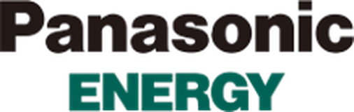
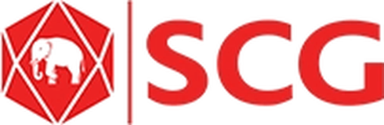
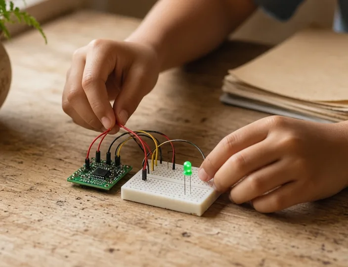

โรงงาน
เห็นภาพรวมสายการผลิต คลังสินค้า และสถานะเครื่องจักร
Brand & Website / Design Guide
คู่มือภาพและระบบออกแบบ จากไฟล์จริงของหน้าแรกชุดเซน สำหรับ Artron Innovative — ไม่ได้คิดสีหรือตัวอักษรใหม่
เซนและธรรมชาติ งานประณีตที่สงบและมีพลัง เชื่อมเทคโนโลยี มนุษย์ และธรรมชาติ โดยให้ภาพสื่อความตึงเครียดที่อาจเกิดขึ้นอย่างนัย ไม่กล่าวเป็นข้อความ และไม่ใช้ภาพภัยพิบัติ เคารพภาษาการฝึกตนทางพุทธศาสนา รวมทั้งความตั้งใจด้านการศึกษาของเด็ก ๆ
ใช้ · Do
เขียนอย่างสงบ ชัดเจน และเฉพาะเจาะจง ใช้ข้อความที่ตรวจแล้วจากหน้างานจริง ไม่โฆษณาเกินจริง ไม่สร้างตัวเลขเอง
ไม่ใช้ · Don’t
ไม่กล่าววิกฤตโดยตรง ไม่ใช้คำห้ามในข้อ 11 ไม่ย่อข้อความที่อนุมัติจนกลายเป็นคำต้องห้าม และไม่ใส่ภาพหุ่นยนต์ในโรงพยาบาล
สร้างเทคโนโลยี
ที่เติบโตไปพร้อมกับมนุษย์
ออกแบบเทคโนโลยีเพื่อเกื้อกูลคนทำงาน — เราผสาน IoT, หุ่นยนต์ และ AI เข้ากับพื้นที่จริงอย่างลงตัว เพื่อยกระดับความปลอดภัยและประสิทธิภาพในภาคอุตสาหกรรม สุขภาพ พลังงาน และวิถีเกษตร
ตัวอย่างอื่น: “เพื่อความปลอดภัยและลดความสูญเสียหน้างาน”; “เพื่อแบ่งเบาภาระบุคลากร และคืนเวลาสู่การดูแลผู้คนอย่างใกล้ชิด”; Academy: “เพราะเทคโนโลยีที่ซับซ้อนต้องการสติและจิตใจที่ละเอียดอ่อน เราจึงฝึกฝนคนทำงานตั้งแต่ภายใน”; ท้ายหน้า “สิ่งดี ๆ เริ่มต้น จากการคุยกัน.”; ปุ่ม “ปรึกษาโครงการ”; บรรทัดลูกค้าที่อนุมัติ “ลูกค้าและพันธมิตร ที่ไว้วางใจให้เราร่วมสร้าง”
หัวข้อหลักที่อนุมัติอยู่ใกล้คำห้าม “เติบโตไปด้วยกัน” ห้ามย่อหรือเขียนใหม่ให้กลายเป็นวลีนั้น
ลำดับการฝึกที่อนุมัติในหน้า Academy คือ จิตใจ · ฝีมือ · ปัญญา (จิตสิกขา · สีลสิกขา · ปัญญาสิกขา) ลำดับไตรสิกขาตามแบบแผนคือ ศีล–สมาธิ–ปัญญา จึงยังเป็นคำถามเปิดให้ผู้เกี่ยวข้องยืนยัน โดยคงข้อความที่อนุมัติไว้ก่อน
ใช้ wordmark ตัวเอียง artron เท่านั้น: ไฟล์สีขาวบนพื้น --black / --ink และไฟล์สี ink บน --paper ในต้นฉบับไม่มีกฎระยะว่างเป็นตัวเลข จึงเว้นพื้นที่โดยรอบแล้วตรวจด้วยสายตา ขนาดที่ใช้จริงในแถบนำทาง 96 × 26px และท้ายหน้ากว้าง 132px เป็นจุดอ้างอิง ไม่ใช่ขนาดขั้นต่ำที่ผ่านการทดสอบ

โลโก้สีน้ำเงินเข้มทรงมนรุ่นเก่า — เลิกใช้แล้ว
ทำ: รักษาสัดส่วนและวางบนพื้นเรียบสงบ ห้าม: ยืดตรา เปลี่ยนสีเอง ใช้โลโก้ทรงมนรุ่นเก่า หรือวางบนภาพที่รกโดยไม่มีพื้นที่สงบรองรับ
ค่าต่อไปนี้มาจาก Academy A/B/C และ proposals/v4 คำนวณ contrast ตามสูตร WCAG sRGB อัตราส่วนแสดงทศนิยมสองตำแหน่ง สถานะในตารางใช้เกณฑ์ข้อความทั่วไปเป็นหลัก: AAA ≥ 7:1, AA ≥ 4.5:1, ข้อความขนาดใหญ่ (≥ 24px หรือ ≥ 18.66px ตัวหนา) ใช้ ≥ 3:1
ใช้ --ink กับเนื้อหา, --mute กับป้าย, --blue เป็นสีไฟฟ้าเน้นเพียงสีเดียว ส่วน moss, oak และ rust เป็นสำเนียงธรรมชาติ oak บน paper ผ่านเฉพาะข้อความใหญ่หรือใช้ตกแต่ง รุ่นเก่า zen-hybrid ใช้ mute #7a7b7d ซึ่งไม่ผ่าน AA ข้อความทั่วไปบน paper ให้ใช้ #67686a รุ่นล่าสุด
| Token / hex | บน paper ทั่วไป / ใหญ่ | บน black ทั่วไป / ใหญ่ | บน ink ทั่วไป / ใหญ่ |
|---|---|---|---|
| black #0a0a0a | 17.83:1 AAA / AAA | 1.00:1 ไม่ผ่าน / ไม่ผ่าน | 1.07:1 ไม่ผ่าน / ไม่ผ่าน |
| ink #141414 | 16.59:1 AAA / AAA | 1.07:1 ไม่ผ่าน / ไม่ผ่าน | 1.00:1 ไม่ผ่าน / ไม่ผ่าน |
| ink2 #3c3d3f | 9.79:1 AAA / AAA | 1.82:1 ไม่ผ่าน / ไม่ผ่าน | 1.69:1 ไม่ผ่าน / ไม่ผ่าน |
| mute #67686a | 5.02:1 AA / AAA | 3.55:1 ไม่ผ่าน / AA | 3.30:1 ไม่ผ่าน / AA |
| rule #d9d8d3 | 1.29:1 ไม่ผ่าน / ไม่ผ่าน | 13.87:1 AAA / AAA | 12.91:1 AAA / AAA |
| paper #f4f3ef | 1.00:1 ไม่ผ่าน / ไม่ผ่าน | 17.83:1 AAA / AAA | 16.59:1 AAA / AAA |
| card #f8f7f3 | 1.04:1 ไม่ผ่าน / ไม่ผ่าน | 18.47:1 AAA / AAA | 17.19:1 AAA / AAA |
| stone #e9e7e1 | 1.11:1 ไม่ผ่าน / ไม่ผ่าน | 16.01:1 AAA / AAA | 14.90:1 AAA / AAA |
| white #ffffff | 1.11:1 ไม่ผ่าน / ไม่ผ่าน | 19.80:1 AAA / AAA | 18.42:1 AAA / AAA |
| blue #203fe4 | 6.54:1 AA / AAA | 2.73:1 ไม่ผ่าน / ไม่ผ่าน | 2.54:1 ไม่ผ่าน / ไม่ผ่าน |
| moss #5e6f4f | 4.90:1 AA / AAA | 3.64:1 ไม่ผ่าน / AA | 3.39:1 ไม่ผ่าน / AA |
| oak #a27c55 | 3.41:1 ไม่ผ่าน / AA | 5.23:1 AA / AAA | 4.87:1 AA / AAA |
| rust #9a5b3e | 4.80:1 AA / AAA | 3.71:1 ไม่ผ่าน / AA | 3.46:1 ไม่ผ่าน / AA |
| mute เดิม #7a7b7d | 3.82:1 ไม่ผ่าน / AA | 4.67:1 AA / AAA | 4.35:1 ไม่ผ่าน / AA |
Thai-first ใช้ Anuphan variable 100–700 สองไฟล์แยก unicode-range ภาษาไทยและละติน พร้อม font-display: swap และ fallback system-ui, sans-serif เนื้อหา 400 16px/1.75 สี ink หัวข้อ h1–h3 น้ำหนัก 400 และ letter-spacing: -.012em
| บทบาทจริง | ขนาด / ระยะบรรทัด |
|---|---|
| เนื้อหา | 400 16px / 1.75 · --ink |
| Hero H1 ฐาน | clamp(46px, 5.1vw, 82px) / 1.18 |
| Hero H1 .v ที่ใช้ใน Academy ปัจจุบัน | clamp(32px, 3.3vw, 54px) / 1.32 · ที่ ≤860px เป็น clamp(30px, 8.4vw, 40px) |
| Section H2 | clamp(34px, 3.6vw, 56px) / 1.25–1.28 |
| Academy H2 / บางหัวข้อ | clamp(30px, 3.2vw, 50px) / 1.32 |
| หัวข้อใหญ่ / footer | clamp(36px, 4vw, 64px) / 1.22–1.25 |
| H3 การ์ดอุตสาหกรรม | clamp(21px, 1.7vw, 26px) / 1.4 |
| H3 ขั้น Academy | clamp(26px, 2.2vw, 34px) / 1.3 |
| คำนำ / บรรทัดรอง | clamp(15px, 1.12vw, 18px) / 1.9–2.0 สี #e6e6e6 บนฮีโร่เข้ม |
| Label · 01 / TITLE | 11.5px, น้ำหนัก 500, letter-spacing .16em, uppercase, --mute |
| Caption / source note | 12px, --mute · caption letter-spacing .01em |
| ปุ่ม / ลิงก์ / nav | 13.5px / 15px / 14px |
เทคโนโลยี ที่คิดอย่างมีศิลปะ. เทคโนโลยี · มนุษย์ · ธรรมชาติ
--side: clamp(22px, 4.2vw, 64px) · --col: min(1120px, calc(100vw - 2 * var(--side))) · padding ของ .sec: clamp(120px, 15vw, 210px) 0 ใช้เส้น 1px สี --rule และพื้นที่ว่างเป็นจังหวะเหมือนทรายคราด ไม่ใช้มุมมนเป็นภาษาหลัก ยกเว้นวงกลม border-radius: 50% จุดเปลี่ยน responsive ที่ 860px ไม่ใช่ 768px: กริดเรียงเป็นคอลัมน์เดียวตามบริบท และผนังโลโก้ลูกค้าจาก 6 เหลือ 3 คอลัมน์
บนฮีโร่ตัวอักษรขาว โลโก้สีขาว เมื่อเลื่อนถึงพื้นกระดาษใช้ .bar.lt: สี ink, พื้น rgba(244,243,239,.82), backdrop-filter: blur(14px) padding 22px var(--side), เมนู 14px ระยะห่าง 30px, โลโก้ 96 × 26px สลับไฟล์ขาว/หมึกใน 0.8s
ฉากเปิดเป็นจังหวะเลื่อนจอสี่ตอน ใช้ภาพนิ่งในคู่มือนี้ ไม่โหลด three.js
ป้ายตอนใช้รูปแบบ NN / TITLE ขนาด 11.5px ระยะตัวอักษร .16em สี mute
ปุ่ม .btn: 13.5px, padding 10px 16px, ระยะลูกศร 18px, เส้นขอบ 1px, สูงอย่างน้อย 44px, โฮเวอร์พื้น ink ตัวขาว, ใช้เวลา .5s · .btn.solid พื้น ink · ฮีโร่ .hcta สูงอย่างน้อย 48px, padding 0 22px, 15px, ขอบขาว · ลิงก์ข้อความ .ilink / .alink สูงอย่างน้อย 44px มีเส้นใต้ 1px
เห็นภาพรวมสายการผลิต คลังสินค้า และสถานะเครื่องจักร
ชื่อรางวัลต้องมีแหล่งอ้างอิงที่ตรวจแล้ว ห้ามแต่งตัวเลข
ฝึกฝนจากภายใน — สติ · สมาธิ · ความรับผิดชอบ
ทั้งสามแบบเป็นทางเลือกที่อนุมัติแล้ว ยังไม่ตัดสินผู้ชนะ แบบ A และ B อยู่หลังช่วงศิลปะ แบบ C อยู่ต่อจากฉากเปิดทันที บนจอแคบเรียงแนวตั้ง
โลโก้สีจริงบนพื้น --card ขอบ --rule 1px กริด 6 คอลัมน์ เหลือ 3 คอลัมน์ที่ความกว้าง ≤ 860px




ระบุอุตสาหกรรมและโจทย์สั้น ๆ ทีมที่เกี่ยวข้องจะติดต่อกลับ
แผนที่ในหน้าเว็บเป็นภาพประกอบ ไม่ใช่มาตราส่วน ให้ลิงก์ไปแผนที่จริงเสมอ
ใช้ทราย วง enso พู่กัน หิน ภาพประติมากรรม เวิร์กช็อป และเฟิร์นเป็นช่วงพัก เน้นวัสดุจริง แสงจริง และความสงบ แยกภาพประกอบจากภาพโครงการจริงให้ชัด วิกฤตที่เทคโนโลยีแซงมนุษย์สื่อผ่านภาพอย่างนัยเท่านั้น ไม่เขียนเป็นข้อความ และไม่ใช้ภาพภัยพิบัติ



ใช้ --ease: cubic-bezier(.22, .7, .18, 1) ให้จังหวะยิ่งใหญ่แต่สงบ ลำดับฉากเปิดคือ อนุภาค → วางตัวเป็นทรายและ enso → รอยพู่กัน → ภาพประติมากรรม
| การเคลื่อนไหว | ระยะเวลา |
|---|---|
| ปุ่ม hover | .5s |
| สีและพื้นแถบนำทาง / สลับโลโก้ | .8s / .8s |
| scroll reveal แบบ [data-r] · opacity + transform | 1.6s |
| ภาพ clip-path / transform | 2s / 2.4s |
| enso stroke-dashoffset / opacity | 2.6s / .4s |
| การ์ดขั้น Academy | 1.2s |
| ขั้นบันได opacity / transform | 1.4s / 1.6s |
| ขอบเส้นทาง | 2.2s หน่วง .3s |
| หยดทราย (drip) | 3.2s infinite |
| poster / three.js fade | 1.4s |
คงกฎ @media (prefers-reduced-motion: reduce) { * { transition: none !important; animation: none !important; } } และแสดงเนื้อหาภาพนิ่งให้ครบ ไม่เคลื่อนไหวจนเกิด layout shift (CLS ≤ 0.1)
งานปัจจุบันเป็นหน้าแรกยาวแบบ in-page ส่วนต่อไปนี้เป็นโครงสร้างเสนอเพื่อแยกเป็น 6 หน้า ไม่ใช่หน้าที่สร้างเสร็จแล้ว
รอ: ยืนยันทางเลือก Academy A/B/C และลิงก์ปลายทางของแต่ละหน้า
รอ: ตัวเลขและหลักฐานโครงการที่ได้รับการยืนยัน ห้ามแต่ง metrics
รอ: สร้างหน้า /innovative ซึ่งตอนนี้ยังเป็น 404 แล้วตรวจข้อมูลผลิตภัณฑ์
รอ: ยืนยันแบบ A/B/C และ URL แบบฟอร์ม Academy
รอ: Company Profile และหลักฐานคำกล่าวอ้าง
รอ: URL แบบฟอร์มและข้อมูลติดต่อที่ตรวจล่าสุด
ข้อความทั่วไปและ UI ต้อง contrast ≥ 4.5:1 ข้อความใหญ่ ≥ 24px หรือ ≥ 18.66px ตัวหนาใช้ ≥ 3:1 พื้นที่แตะอย่างน้อย 44px ปุ่มฮีโร่ 48px ให้โฟกัสมองเห็นได้ และใช้ HTML เชิงความหมาย คง reduced motion และภาพนิ่งที่สมบูรณ์
เป้าหมาย Lighthouse มือถือ ≥ 90, LCP ≤ 2.5s และ CLS ≤ 0.1 กำหนดขนาดภาพล่วงหน้า ใช้ font-display: swap และโหลดภาพตามจำเป็น หน้า proposal ใช้ภาพ poster ก่อน แล้วค่อยโหลด three.js เมื่อมีการโต้ตอบหรือช่วงว่าง คู่มือนี้ไม่โหลด three.js ระหว่างตรวจใช้ <meta name="robots" content="noindex, nofollow">
ห้ามใช้:
ทุกตัวเลขและคำกล่าวอ้างต้องมีแหล่งอ้างอิง ห้ามสร้างตัวเลขกรณีศึกษาเอง ส่วนย่อย ISO/IEC 29110 ยังต้องเทียบเครื่องหมาย TÜV SÜD กับไฟล์ข้อมูล และรางวัล Silver Thai Digital & AI Award 2026 ยังต้องยืนยันก่อนเผยแพร่ PdM Box และ ModuRa-01 อยู่ที่หน้า /innovative